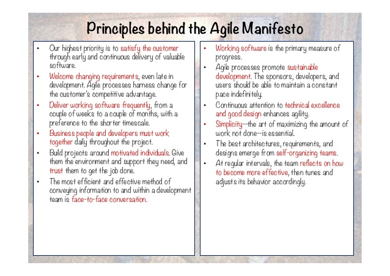
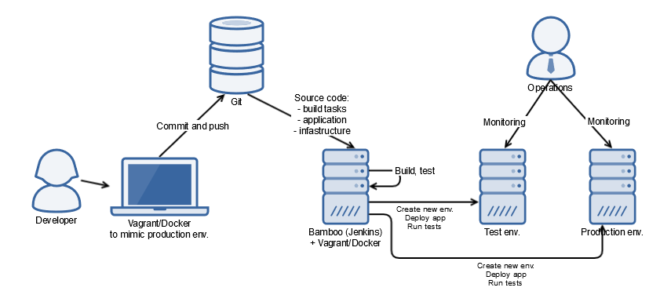
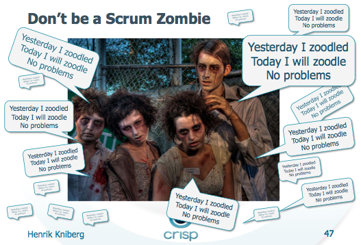

DevOps
why you should care
Andrzej Bednarz
@bednarz_andrzej
About me
- 10+ years in software development
- Currently CTO in NetworkedAssets
- Agile
- Software Craftsmanship
- Java and JVM
Agenda
- What is the problem?
- Where DevOps come from
- What DevOps is
- An example of DevOps process & tools
You've developed code ...
and what's next
Example from 2005
- beginning of CI
- manual non-repeatable deployment (small classes or big bang)
- weak code configuration & versioning
Example from 2010
- fairly good CI
- but no integration tests
- local vs. production environment
- manual & repeatable but controlled deployment
- failover only "hopefully"
So what?
- Fear to release
- Slow cycle from requirements to live app - business suffers
- Fragile deployments
- Big stress
- Hard to reproduce errors (production specific)
- Hard to recover
What about Agile?
DevOps origin
- Many unknown heroes
- John Allspaw’s Velocity 2009 presentation “10+ Deploys Per Day: Dev and Ops Cooperation @ Flickr”
- Patrick Debois "DevOps Days" in Ghent in late 2009
- Even earlier: session “Agile Infrastructure” (2008), "agile-sysadmin" mailing list
DevOps
- A lot of different things to different people - broad concept (like "Agile" or "Quality")
- Operations and development engineers participating together in the entire service lifecycle (design, dev, production support)
- Operations staff making use many of the same techniques as developers for their systems work
- Take away “throw it over the wall” mentality

DevOps - set of:
- Values (like in Agile Manifesto)
- Principles ("Infrastructure as code")
- Methods (Kanban)
- Practices (Continuous Deployment, metrics and monitoring scheme, virtualization)
- Tools (Bamboo, Puppet, Vagrant)
DevOps complements Agile
"In the end, what DevOps hopes to bring to Agile is the understanding and practice that software isn’t done until it’s successfully delivered to a user and meets their expectations around availability, performance, and pace of change.",
http://theagileadmin.com/what-is-devops/DevOps benefits
- improved deployment frequency
- faster time to market
- lower failure rate of new releases
- shortened lead time between fixes
- faster mean time to recovery in the event of a new release crashing or otherwise disabling the current system
- maximize the predictability, efficiency, security, and maintainability of operational processes
DevOps tools
Example of process
Don't be a DevOps zombie
References
- My presentation on GitHub: https://github.com/andbed/devops
- http://theagileadmin.com/what-is-devops/
- http://www.slideshare.net/jallspaw/10-deploys-per-day-dev-and-ops-cooperation-at-flickr
- https://en.wikipedia.org/wiki/DevOps
- http://techcrunch.com/2015/05/15/what-is-devops/
- Nice Vagrant + Puppet examples: https://github.com/patrickdlee/vagrant-examples